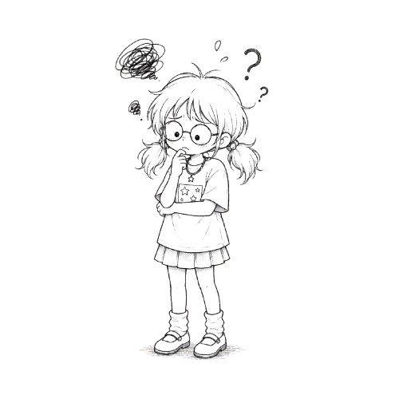

⚡
爆款规则引擎
↳ 通知了但不知道为什么触发从单一阈值升级成自定义条件组合，任意/全部匹配都支持，命中后清楚告诉你触发了哪条规则。
24h 增量
条件组合
企业微信·飞书·邮箱
YOUTUBE RADAR × AI
你的爆款视频已送达。
定制频道监控规则，让信号主动找上门。


大部分插件只显示发布时间，增量爆发靠人工推测。
手动刷对标，高峰时期会同时打开几十个视频标签。
真正有价值的信号随时可能爆发，难以及时捕捉。
接入 YouTube Data API，拉取频道和视频基础数据，优化配额消耗。
反向获取 vidIQ token，处理接口。
反复测试 QStash，排查 Upstash regional endpoint URL。
自定义触发爆款推送条件，实现闭环。
第一次收到爆款通知时，我知道这个工具的闭环成立了——
这次跑在生产环境里的，不是 demo。
从单一阈值升级成自定义条件组合，任意/全部匹配都支持，命中后清楚告诉你触发了哪条规则。
把爆款视频归入"动画科普""讽刺类"等样本组。原来只是监控，现在能把好内容存下来，形成可复盘的内容库。
刷 YouTube 时遇到感兴趣的频道，点一下插件直接加入监控列表，不用离开页面。
按播放量、内容形态、时间窗口、订阅区间筛选，监控的所有频道视频一屏内对比。
这个项目，练到的是这四件事
从自己找频道定位的痛点出发，不先写漂亮文档，而是把每天手动刷视频的重复劳动产品化。
insight-driven频道池、定时任务、增量判断、通知推送、样本沉淀形成闭环，第一次收到通知时系统真正成立。
closed-loop纯前端、Vercel Serverless、Upstash Redis、QStash、Resend、企业微信、Chrome 插件都被串起来。
full-stack清楚当前完成的是指定频道监控，而不是全网低粉爆款发现；下一步才是机会挖掘和拆解工作台。
product-scope